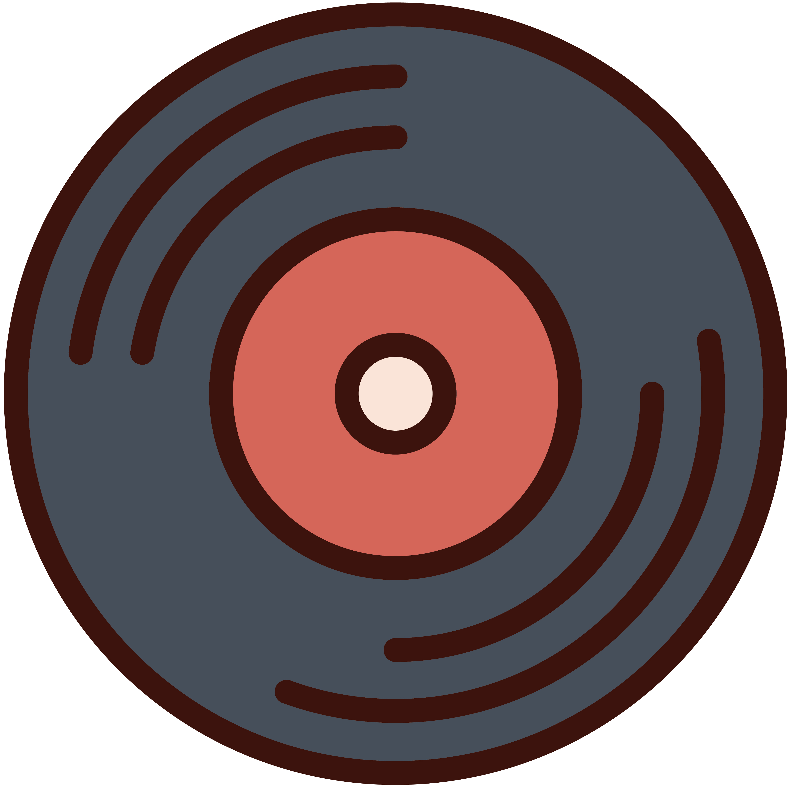
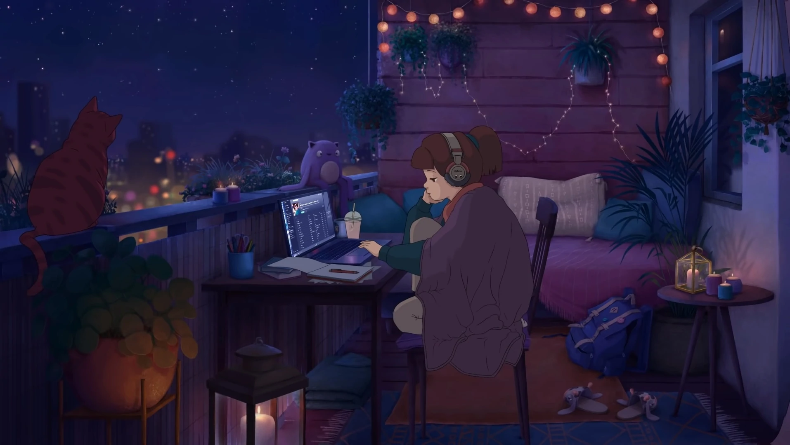

focus mode.
00
:
10
START

Song Name
LoFi Records

1 A.M. Study Sessions
- Cotton Cloud02:03
- Snowman03:15
- the places we used to walk 02:16
- wool gloves02:46
- Im Sorry02:17
- Nova01:44
- Carried Away01:55
- Snow Sand02:45
- Single Phial01:44
- Drops02:03
- Espresso02:42
- Luminescence01:40
- Explorers02:03
- Wish You Were Mine02:02
- Reflections02:02
- Alone Time03:23
- Owls of the Night02:22
- amber01:29
- fever02:33
- Circle01:53
- Cuddlin02:57
- Late Night Call02:15
- Gyoza02:00
- Keyframe02:54
- breeze03:15
- Lunar Drive03:09
- Steps02:31